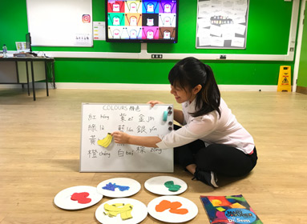
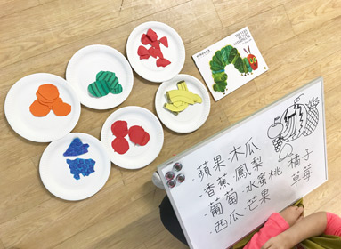
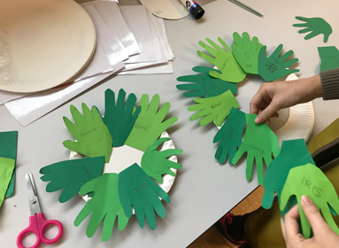
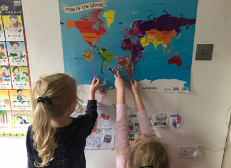
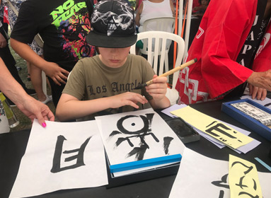
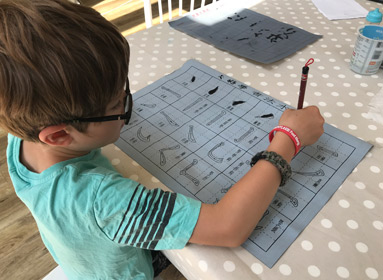

關於 Mandarin Go
About Manadrin Go
Mandarin Go 的成立宗旨為「快樂、學習、成長」，我們提倡英國在地化的中文教育，透過以幼兒生活經驗為出發點設計的主題課程，使孩子們能夠自然而然地從經驗中學習，創造快樂學習與成長的回憶。
我們立志成為孩子們學習中文的啟蒙者，讓孩子們喜愛中文，提升孩子對於學習中文的興趣。並帶領孩子認識自我、重視家人之間的情感、關懷他人與認識社區、探索環境、尊重並包容來自世界不同地區的多元文化。

Mandarin Go 的成立宗旨為「快樂、學習、成長」，我們提倡英國在地化的中文教育，透過以幼兒生活經驗為出發點設計的主題課程，使孩子們能夠自然而然地從經驗中學習，創造快樂學習與成長的回憶。
我們立志成為孩子們學習中文的啟蒙者，讓孩子們喜愛中文，提升孩子對於學習中文的興趣。並帶領孩子認識自我、重視家人之間的情感、關懷他人與認識社區、探索環境、尊重並包容來自世界不同地區的多元文化。
創辦 Mandarin Go 目的是希望能夠培養更多快樂的孩子，渴望孩子們能夠在幼兒學習階段遇到好老師。這不僅是孩子們的福氣，更是老師們的福份。我希望每個孩子都能夠開心地成長，擁有愉快且難忘的童年。學習語言可以幫助孩子們擁有更高、更廣的視野，然而孩子們身、心靈全方位的發展同樣重要，因此，除了語言之外，也希望重視孩子們的各種能力，例如：與他人分享，關懷他人，並懂得表達自身在社會與情緒領域的能力；身體動作發展與培養，例如大肌肉肢體動作和小肌肉精細動作；孩子們對於這個世界的好奇心、充滿創意與想像空間的認知、與美感領域的能力。
學習，是一種長大的過程，而我們希望，孩子們能夠快樂地長大、快樂地學習。期許每一位跟著我們的老師，一起長大的孩子，都是快樂且幸福的孩子。

認識顏色

好吃的水果

DIY小手花圈

探索世界

文化體驗活動

書法體驗
國立臺灣師範大學/華語文教學研究所博士
1. 國立臺東大學華語文學系/助理教授
2. 國立聯合大學華語文學系/講師、助理教授
3. 國立臺灣師範大學國語教學中心/研發師暨華語文教師
4. 臺灣僑委會海外華文巡迴研習講座
5. 臺灣僑委會網路種子師資培訓課程規劃暨講座
6. 臺灣教育部數位華文教學能力培訓課程講座教師
7. 台灣華語文教學學會常務理事、祕書長、副祕書長
8. 國立臺東大學、國立聯合大學教學傑出優良教師獎
9. 執行多項科技部、教育部、僑委會、數位公司之研發等計畫
10. 專書、華文教材出版
日本東海大學/廣報學研究所傳播碩士
1.敬業文教服務有限公司/副總經理
2.國立臺北教育大學幼教系/教育系兼任講師
3.光啟社-歷經企劃部經理、多媒體製作中心主任、業務部副理
4.從事節目編劇、企劃、電視製作人、多媒體製作人
5.台灣飛利浦公司/多媒體部經理
6.資策會科學展示中心/資教組組長、業規組組長
7.中華電視公司/教學事業處處長
8.華視文化公司/董事
9.華視數位科公司/董事
10.中華民國空中教育學會/秘書長
11.師大華語研究所/精彩漢語專案研究員
12.北京蘇活多媒體公司/副總經理
13.階梯中國語/多媒體課程製作人
14.LIVE ABC互動華語多媒體互動節目課程製作人
國立臺灣師範大學/華語文教學研究所
國立台灣大學國際華語研習所/專任華語教師
國立台灣師範大學國語中心/ 兼任華語教師
國立中央大學語言中心/ 專案講師
國立臺灣師範大學華語文教學系/約聘語言老師